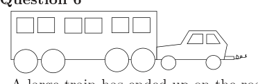
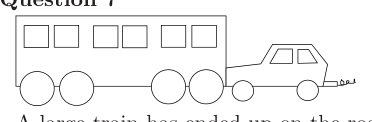
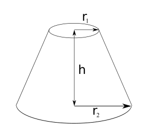
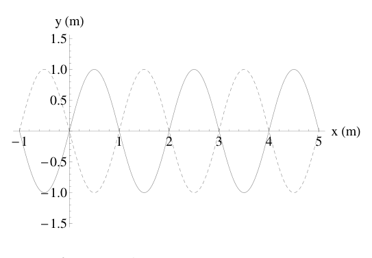
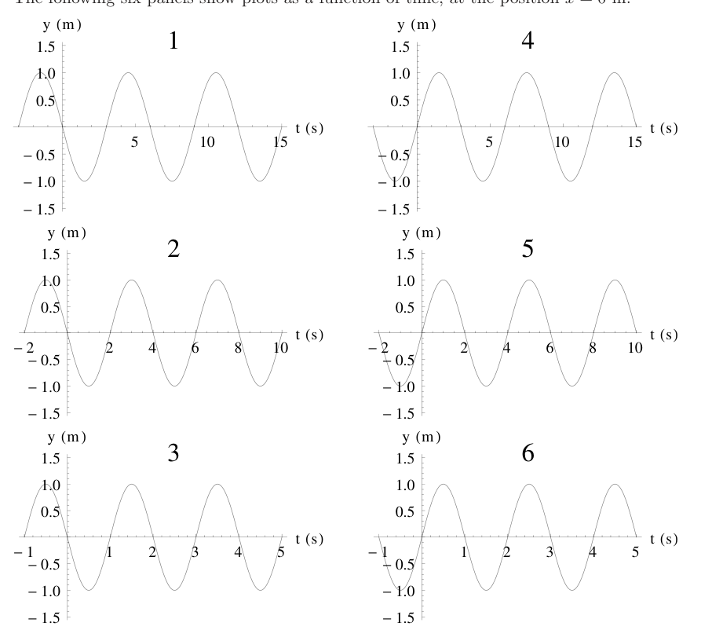

Question 1 A large hefty chicken and a small light quail, both flying in midair, have the same kinetic energy. Which of the following statements is true?
- A. The chicken has a greater speed than the quail.
- B. The quail has a greater speed than the chicken.
- C. The chicken and the quail have the same speed.
- D. Nothing can be inferred, the kinetic energy has nothing to do with the speed.
- E. The direction of the quail and the chicken must be taken into account before a decision can be made.
Topic: Newtonian Mechanics, Conservation of Energy Metodi: Kinematic Equations, Energy Conservation Method Competenze: Physical Reasoning, Mathematical Modeling Objects: — Fonte: Testo (PDF) — p.2
Domanda 1 Un pollo pesante e un piccolo codardo leggero, entrambi volanti in mezzo all’aria, hanno la stessa dinamica
- energia. Quale delle seguenti affermazioni è vera?
- A. Il pollo ha una velocità superiore alla caviglia.
- B. La caviglia ha una velocità superiore a quella del pollo.
- C. Il pollo e la caviglia hanno la stessa velocità.
- D. Non si può dedurre nulla, l’energia cinetica non ha nulla a che fare con la velocità.
- E. Prima di prendere una decisione, deve essere presa in considerazione la direzione della codone e del pollo
- Si può fare.
Topic: Newtonian Mechanics, Conservation of Energy Metodi: Kinematic Equations, Energy Conservation Method Competenze: Physical Reasoning, Mathematical Modeling Objects: — Fonte: Testo (PDF) — p.2
Question 2 The large hefty chicken and a small light quail, still both flying in midair with the same kinetic energy, fly directly at each other and collide head-on due to a joint navigational error, and briefly become one fowl object. Which of the following statements is true in the instant after the collision?
- A. The object moves in the same direction as the chicken’s original motion.
- B. The object moves in the same direction as the quail’s original motion.
- C. The object stops dead in the air.
- D. As soon as they collide they move downward with velocity .
- E. It depends on how hard the chicken hits the quail.
Topic: Newtonian Mechanics, Conservation of Momentum Metodi: Conservation of Momentum, Impulse-Momentum Theorem Competenze: Physical Reasoning, Mathematical Modeling Objects: — Fonte: Testo (PDF) — p.2
Domanda 2 Il pollo grosso e pesante e una piccola caviglia leggera, ancora entrambi volano in mezzo all’aria con la stessa kinetica energia, volano direttamente l’uno contro l’altro e si schiantano di fronte a causa di un errore di navigazione comune, e brevemente diventano un oggetto di uccello. Qual è la seguente affermazione vera nel momento successivo
- La collisione?
- A. L’oggetto si muove nella stessa direzione del movimento originale del pollo.
- B. L’oggetto si muove nella stessa direzione del movimento originale della quail.
- C. L’oggetto si ferma morto nell’aria.
- D. Non appena si scontrano si muovono verso il basso con velocità .
- Dipende da quanto forte il pollo colpisca la caviglia.
Topic: Newtonian Mechanics, Conservation of Momentum Metodi: Conservation of Momentum, Impulse-Momentum Theorem Competenze: Physical Reasoning, Mathematical Modeling Objects: — Fonte: Testo (PDF) — p.2
Question 3 Lucy is measuring the acceleration due to gravity in Melbourne by dropping a ball through a vertical distance 1.00 m and timing how long it takes. The ball starts at rest, and Lucy times its fall four times. The results are: 0.47 s, 0.42 s, 0.48 s and 0.41 s. The uncertainty in her distance measurement is 1 cm and the uncertainty in the timer is 0.01 s. What is the value of g from Lucy’s experiment?
- A.
- B.
- C.
- D.
- E.
Topic: Newtonian Mechanics Metodi: Kinematic Equations, Experimental Data Analysis, Statistical Averaging Competenze: Experimental Data Analysis, Estimation & Approximation, Mathematical Modeling Objects: Ball Fonte: Testo (PDF) — p.3
Domanda 3 Lucy sta misurando l’accelerazione dovuta alla gravità a Melbourne lanciando una palla attraverso un Distanza verticale di 1,00 m e tempistica del tempo necessario. La palla inizia a riposo, e Lucy volte La sua caduta è stata di quattro volte. I risultati sono: 0,47 s, 0,42 s, 0,48 s e 0,41 s. L’incertezza in lei la misura della distanza è di 1 cm e l’incertezza nel timer è di 0,01 s. Qual è il valore di g
- L’esperimento di Lucy?
- A.
- B.
- C.
- D.
- E.
Topic: Newtonian Mechanics Metodi: Kinematic Equations, Experimental Data Analysis, Statistical Averaging Competenze: Experimental Data Analysis, Estimation & Approximation, Mathematical Modeling Objects: Ball Fonte: Testo (PDF) — p.3
Question 4 The uncertainty in this value of g is
- A. at least and at most .
- B. more than but at most .
- C. more than but at most .
- D. more than but at most .
- E. more than but at most .
Topic: Newtonian Mechanics Metodi: Error Propagation, Experimental Data Analysis Competenze: Error Propagation, Experimental Data Analysis, Mathematical Modeling Objects: — Fonte: Testo (PDF) — p.3
Domanda 4 L’incertezza di questo valore di g è
- A. almeno e al massimo .
- B. più di ma al massimo .
- C. più di ma al massimo .
- D. più di ma al massimo .
- E. più di ma al massimo .
Topic: Newtonian Mechanics Metodi: Error Propagation, Experimental Data Analysis Competenze: Error Propagation, Experimental Data Analysis, Mathematical Modeling Objects: — Fonte: Testo (PDF) — p.3
Question 5 The equation below gives the expected lifetime, L, of a rooster in a Kate’s chicken yard once it has begun crowing. Note that all variables (including L) are positive, and the angle (which represents the angular height of the sun at 7 am) varies between and .
Which of the following will increase the life expectancy of a rooster in Kate’s chicken yard?
- A. Decreasing T
- B. Increasing V
- C. Decreasing S
- D. Decreasing
- E. None of the above
Topic: Rotational Dynamics Metodi: Dimensional Analysis Competenze: Mathematical Modeling, Physical Reasoning Objects: — Fonte: Testo (PDF) — p.3
Domanda 5 L’equazione di seguito dà la durata prevista, L, di un gallo nel cortile di pollo di Kate una volta che è ha iniziato a gridar. Si noti che tutte le variabili (comprese L) sono positive, e l’angolo (che rappresenta l’altezza angolare del sole alle 7 del mattino) varia tra e .
Quale delle seguenti cose aumenterà l’aspettativa di vita di un gallo nel chiocco di Kate?
- A. T diminuzione
- B. V in aumento
- C. Sconcisione S
- D. Diminuzione
- E. Nessuna delle seguenti:
Topic: Rotational Dynamics Metodi: Dimensional Analysis Competenze: Mathematical Modeling, Physical Reasoning Objects: — Fonte: Testo (PDF) — p.3
Question 6 A large train has ended up on the road and a small car is pushing it back to the tracks. While the small car and the large train being pushed are speeding up to cruising speed, (A) the amount of force with which the small car pushes against the large train is equal to the amount of force with which the large train pushes back against the small car. (B) the amount of force with which the small car pushes against the large train is smaller than the amount of force with which the large train pushes back against the small car. (C) the amount of force with which the small car pushes against the large train is greater than the amount of force with which the large train pushes back against the small car. (D) the small car’s engine is running so the small car pushes against the large train, but the large train’s engine is not running so it can’t push back against the small car. (E) neither the small car nor the large train exert any force on the other. The large train is pushed forward simply because it is in the way of the small car.

treno e auto su strada, spintaTopic: Newtonian Mechanics Metodi: Free-Body Diagram, Physical Modeling Competenze: Physical Reasoning, Diagrammatic Reasoning Objects: — Fonte: Testo (PDF) — p.4
Domanda 6 Un grande treno è finito sulla strada e una piccola auto lo sta spingendo indietro alle binarie. Mentre la piccola macchina e il grande treno che viene spinto si stanno accelerando fino alla velocità di crociera, (A) la forza con cui il piccolo veicolo spinge contro il grande treno è pari alla forza di quantità di forza con cui il grande treno spinge indietro contro la piccola macchina. B) la forza con cui la piccola auto spinge contro il grande treno è minore che la forza con cui il grande treno spinge indietro contro la piccola macchina. C) la forza con cui il piccolo veicolo spinge contro il grande treno è superiore a la forza con cui il grande treno spinge indietro contro la piccola macchina. D) il motore della piccola auto è in funzione in modo che la piccola auto spinga contro il grande treno, ma la Il motore del grande treno non funziona, quindi non può spingere contro la piccola macchina. (E) né la piccola auto né il grande treno esercitano alcuna forza l’uno sull’altro. Il grande treno è E’ stato spinto avanti semplicemente perché si trovava in mezzo alla piccola macchina.
- treno e auto su strada, spinta *
Topic: Newtonian Mechanics Metodi: Free-Body Diagram, Physical Modeling Competenze: Physical Reasoning, Diagrammatic Reasoning Objects: — Fonte: Testo (PDF) — p.4
Question 7 A large train has ended up on the road and a small car is pushing it back to the tracks. After the small car and the large train being pushed have reached a constant cruising speed, (A) the amount of force with which the small car pushes against the large train is equal to the amount of force with which the large train pushes back against the small car. (B) the amount of force with which the small car pushes against the large train is smaller than the amount of force with which the large train pushes back against the small car. (C) the amount of force with which the small car pushes against the large train is greater than the amount of force with which the large train pushes back against the small car. (D) the small car’s engine is running so the small car pushes against the large train, but the large train’s engine is not running so it can’t push back against the small car. (E) neither the small car nor the large train exert any force on the other. The large train is pushed forward simply because it is in the way of the small car.

treno e auto su strada, velocità costanteTopic: Newtonian Mechanics Metodi: Free-Body Diagram, Physical Modeling Competenze: Physical Reasoning, Diagrammatic Reasoning Objects: — Fonte: Testo (PDF) — p.4
Domanda 7 Un grande treno è finito sulla strada e una piccola auto lo sta spingendo indietro alle binarie. Dopo la piccola macchina e il grande treno che viene spinto hanno raggiunto una velocità di crociera costante, (A) la forza con cui il piccolo veicolo spinge contro il grande treno è pari alla forza di quantità di forza con cui il grande treno spinge indietro contro la piccola macchina. B) la forza con cui la piccola auto spinge contro il grande treno è minore che la forza con cui il grande treno spinge indietro contro la piccola macchina. C) la forza con cui il piccolo veicolo spinge contro il grande treno è superiore a la forza con cui il grande treno spinge indietro contro la piccola macchina. D) il motore della piccola auto è in funzione in modo che la piccola auto spinga contro il grande treno, ma la Il motore del grande treno non funziona, quindi non può spingere contro la piccola macchina. (E) né la piccola auto né il grande treno esercitano alcuna forza l’uno sull’altro. Il grande treno è E’ stato spinto avanti semplicemente perché si trovava in mezzo alla piccola macchina.
- treno e auto su strada, velocità costante *
Topic: Newtonian Mechanics Metodi: Free-Body Diagram, Physical Modeling Competenze: Physical Reasoning, Diagrammatic Reasoning Objects: — Fonte: Testo (PDF) — p.4
Question 8 The figure above shows a frustum of a cone. Which of the expressions gives the area of the curved surface?
- A.
- B.
- C.
- D.
- E.

tronco di cono con raggi r1, r2, hTopic: Mathematics Metodi: Dimensional Analysis Competenze: Mathematical Modeling Objects: - Fonte: Testo (PDF) — p.5
Domanda 8 La figura sopra mostra un frustum di un cono. Qual è l’espressione che dà l’area della superficie curva?
- A.
- B.
- C.
- D.
- E.
*tronco di cono con raggi r1, r2, h *
Topic: Mathematics Metodi: Dimensional Analysis Competenze: Mathematical Modeling Objects: - Fonte: Testo (PDF) — p.5
Question 9 Someone analysing an electric circuit obtains the equations
Note that V is the unit volts, and is the unit Ohms. , and are currents. Which of the following statements is true?
- A. ,
- B. ,
- C.
- D. ,
- E. ,
Topic: Circuits Metodi: Kirchhoff’s Laws, Equivalent Circuit Reduction Competenze: Mathematical Modeling, Diagrammatic Reasoning Objects: Resistor, Battery Fonte: Testo (PDF) — p.5
Domanda 9 Qualcuno che analizza un circuito elettrico ottiene le equazioni
Si noti che V è l’unità volti e è l’unità Ohms. , e sono correnti. Qual è il numero di le seguenti affermazioni sono vere?
- A. ,
- B. ,
- C.
- D. ,
- E. ,
Topic: Circuits Metodi: Kirchhoff’s Laws, Equivalent Circuit Reduction Competenze: Mathematical Modeling, Diagrammatic Reasoning Objects: Resistor, Battery Fonte: Testo (PDF) — p.5
Question 10 The figure to the right shows a travelling wave moving in the positive x–direction. At time s, the wave plotted as a function of position has the shape shown by the solid curve, and at s, the shape shown by the dashed curve.
The following six panels show plots as a function of time, at the position m.
Which of the panels represent possible shapes of the travelling wave?
- A. 4 & 6
- B. 1 & 3
- C. 1, 2 & 3
- D. 4, 5 & 6
- E. 1 & 4

onda viaggiante y(x) solida e tratteggiata
sei pannelli y(t) a x=0 mTopic: Oscillations & Waves Metodi: Wave Equation, Simple Harmonic Motion Analysis Competenze: Physical Reasoning, Diagrammatic Reasoning, Mathematical Modeling Objects: — Fonte: Testo (PDF) — p.6
Domanda 10 La figura a destra mostra un viaggiatore onde che si muovono nella direzione positiva. Al tempo s, l’onda è stata tracciata come un la funzione di posizione ha la forma mostrata per la curva solida, e a s, la forma indicata dalla curva a punti.
I seguenti sei pannelli mostrano le grafiche in funzione del tempo, nella posizione m.
Quali dei pannelli rappresentano le possibili forme dell’onda viaggiante?
- A. 4 & 6
- B. 1 & 3
- C. 1, 2 & 3
- D. 4, 5 & 6
- E. 1 & 4